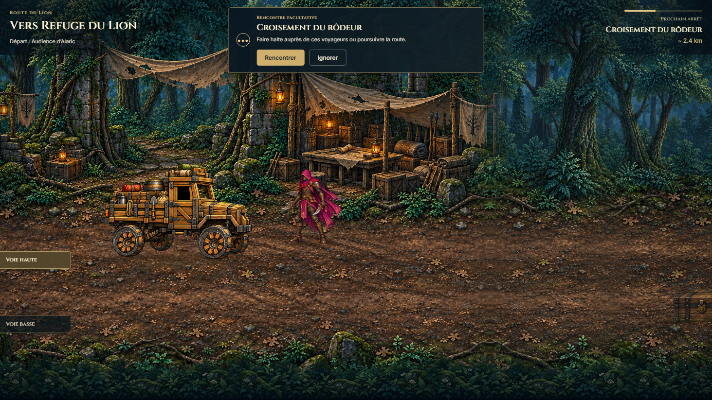
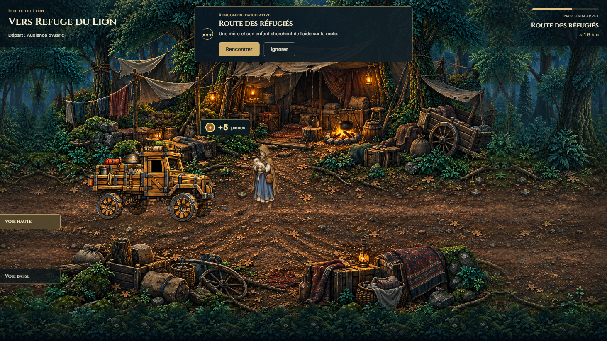
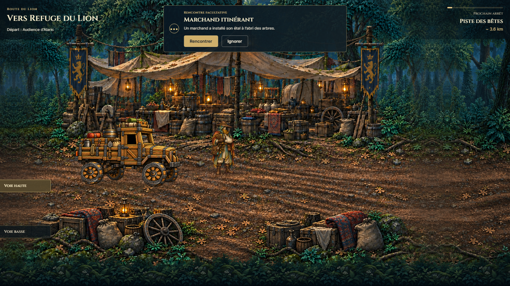
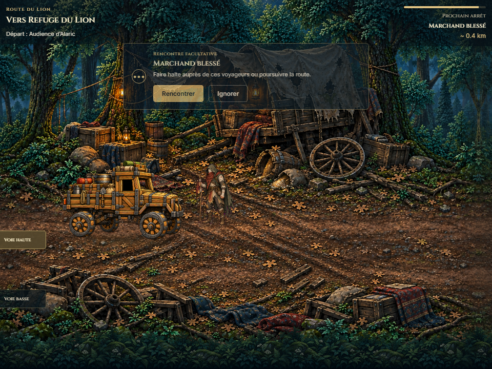
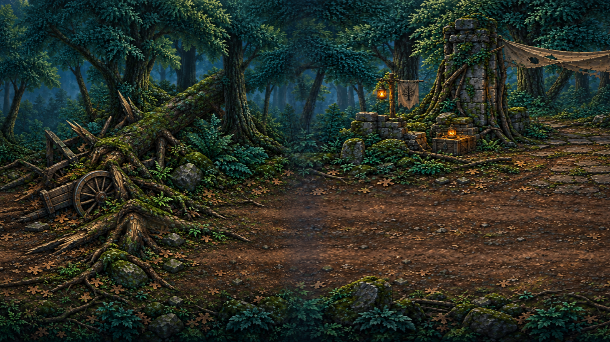
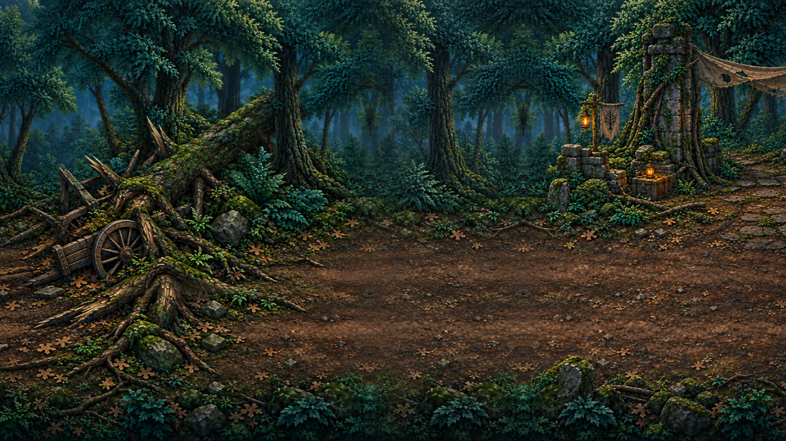

Proportions originales conservées. Images sources inchangées. Les captures ci-dessous correspondent au rendu final, après retrait des versions étirées.
B · Périmètre de l'avant-poste en ruines. lion-first-trial-combat
Dans les deux cas, le carrefour et son panneau ont disparu sous le fondu opaque. Le camion reprend automatiquement sa progression sur le nouvel axe.
Personnages sans marqueur

Cédric · voie haute, hauteur perçue augmentée.

Mère réfugiée · voie haute.

Marchand itinérant · Ignorer conserve la voie.

Rencontre humaine de branche · 960 × 720.
Raccord de terrain

Avant · bande bleutée issue du double masque de transparence.

Après · fond opaque continu et proportions préservées.
Les variations et répétitions du terrain peint ne sont pas retouchées. Aucun art n'est régénéré pour masquer les limites.
Défilement et parcours
Audit des raccords, acteurs masqués. Les diagnostics de contraste au début sont temporaires ; le défilement final utilise la présentation normale.Parcours complet Rencontrer / Combattre, retours sur route et arrivée TravelView.
Production désactivée, déploiement limité à T0. Aucun commit ni push. Le gel visuel reste soumis à la revue opérateur.